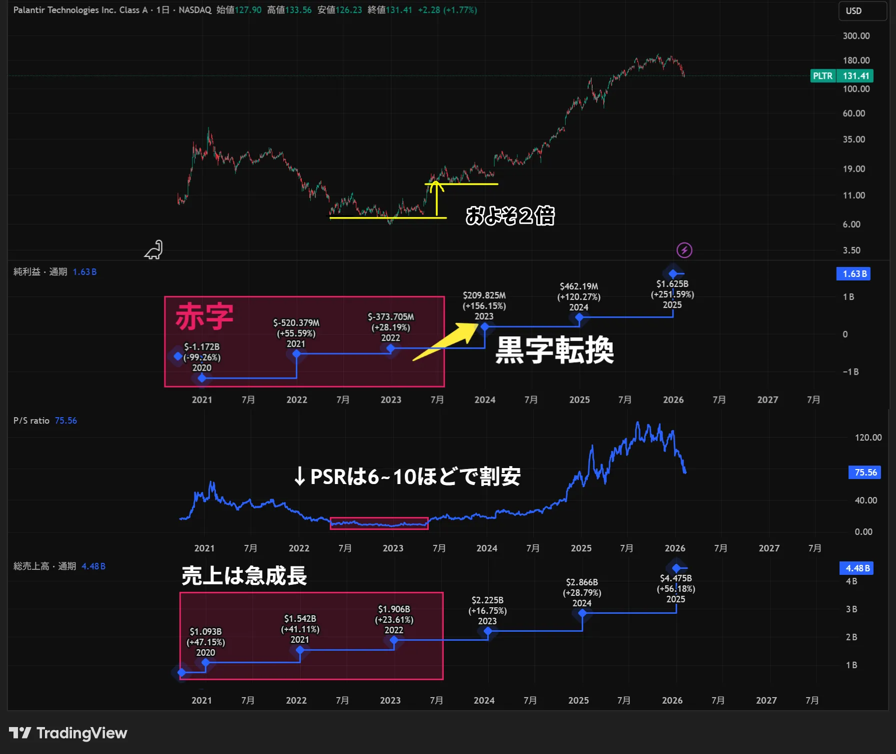

「このグロース企業、革新的ですごい伸びているけど、ずっと赤字なんだよな…買っても大丈夫かな？」
そんな悩みを持ったことはありませんか？
黒字企業であれば「PER（株価収益率）」で割安かどうかを判断できますが、成長途中の赤字企業（ハイパーグロース株）にはPERは使えません。そこで登場するのが、最強の評価指標「PSR（株価売上高倍率）」です。
かつては万年赤字と言われながらも、株価が爆発的に上昇したPalantir（パランティア）のような企業を見つけるには、このPSRを正しく理解することが不可欠です。
今回は、赤字企業の「未来の価値」を測るPSRの使い方と、それを使った「第2のパランティア」の探し方を解説します。
1. そもそもPSR（株価売上高倍率）とは？
PSR (Price to Sales Ratio) とは、その企業の株価が「売上高」に対して何倍まで買われているかを示す指標です。日本語では「株価売上高倍率」と呼ばれます。
PSR ＝ 時価総額 ÷ 年間売上高
または
PSR ＝ 現在の株価 ÷ 1株当たりの売上高（SPS）
なぜPERじゃダメなのか？
一般的な指標であるPER（株価収益率）は「利益」を基準にします。しかし、Amazonの初期や多くのSaaS企業のように、「今は利益を度外視して、広告宣伝や開発に投資し、シェアを拡大するフェーズ」の企業は、利益が赤字（マイナス）になります。
利益がマイナスだとPERは算出不能です。そこで、赤字でも必ず存在する「売上高（トップライン）」を基準にするPSRが活躍するのです。
2. PSRの目安：何倍なら「買い」なのか？
「PSRが何倍なら割安ですか？」という質問をよく受けますが、正解は「業種と成長率による」です。ここが一番の落とし穴です。
セクター別の目安（参考値）
PSRは利益率が高いビジネスほど、高く許容される傾向があります。
利益率が低いため、売上に対する評価（PSR）も控えめになります。
標準的なIT企業。受託開発中心などは利益率が読みやすく、この範囲が一般的。
将来の利益爆発が期待されるセクター。粗利率80%を超えるお宝企業も。
重要なのは「成長率」とのセット
「PSR 20倍」は一見割高に見えますが、売上が毎年50%成長しているなら「割安」かもしれません。逆に、売上成長が止まっているのに「PSR 10倍」なら、それは「超割高」です。
ポイント：
PSR単体で見ず、「売上高成長率」とセットで見るのが鉄則です。
3. 「第2のパランティア」を探す3つの条件
Palantir（PLTR）は、長らく赤字が続いていましたが、政府機関や大企業への導入が進み、圧倒的な「売上成長」と「利益率の改善」を見せて株価が急騰しました。
第2のパランティアのような「お宝赤字銘柄」を探すために、PSRを使ってスクリーニングする際の3つの条件を紹介します。
① PSRが適正範囲（高すぎない）か？
いくら良い企業でも、PSRが50倍や100倍を超えている場合は「期待が織り込まれすぎ」です。成長率にもよりますが、PSR 10倍〜20倍前後で放置されている銘柄にチャンスが潜んでいます。
② 売上高成長率が20%〜30%を超えているか？
赤字を正当化できるのは「成長」だけです。最低でもYoY（前年同期比）で20%以上、理想は30%以上の売上成長を維持しているか確認しましょう。
③ 粗利率（Gross Margin）が高いか？
ここが最重要です。売上が増えたときに、将来ちゃんと利益が出る体質か？を見極めるには「粗利率」を見ます。
SaaSやソフトウェア企業なら、粗利率70%〜80%以上が目安です。粗利率が高ければ、将来コスト（販管費）が下がった瞬間に、莫大な利益を生む「ドル箱企業」に変わります。
4. 実際のチャートで解説！（パランティア）

2023年まで赤字が続いてた一方で、売上高は急成長しており、PSRは6~10ほどしかなく、割安であることがわかります。その後、黒字転換を理由に株価は暴騰。今ではその時の株価の約20倍ほどになってしまいました...
5. PSRを使う際の注意点（リスク）
PSRは魔法の杖ではありません。以下のリスクには注意してください。
⚠️ 注意すべきリスク
- 利益構造の無視: 売上があっても、原価が高すぎて永遠に黒字化できないビジネスモデルではないか？
- 金利の影響: 金利が上昇する局面では、PSRが高いハイグロース株（赤字株）は、真っ先に売られる傾向があります。
- 希薄化リスク: 赤字企業は資金調達のために新株を発行（増資）することが多く、1株あたりの価値が下がることがあります。
まとめ：PSRを使いこなして成長株を掴もう
赤字企業への投資は怖いものです。しかし、AmazonもTeslaもPalantirも、かつては「赤字のボロ株」と笑われた時期がありました。
その中から「本物」を見分けるレンズがPSRです。
- PSR（割安度）
- 売上成長率（勢い）
- 粗利率（将来の収益性）
この3つを組み合わせて分析すれば、財務諸表の「赤字」という文字の奥にある、企業の真の実力が見えてくるはずです。ぜひ、あなただけの「第2のパランティア」を見つけてください！